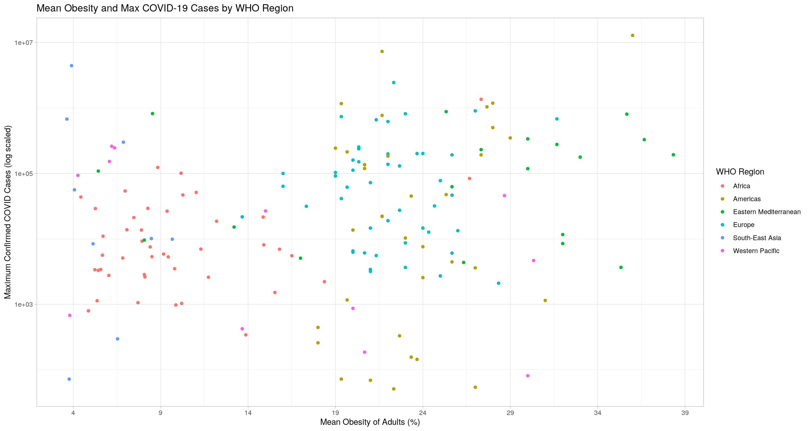
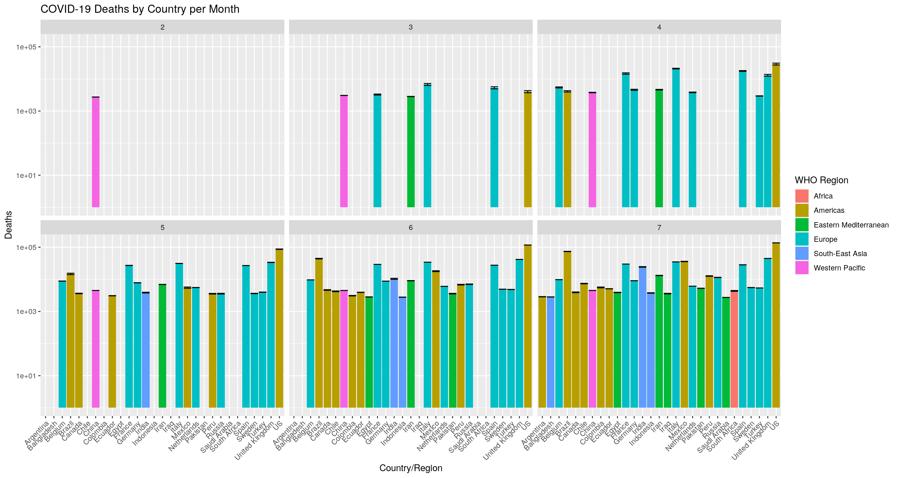
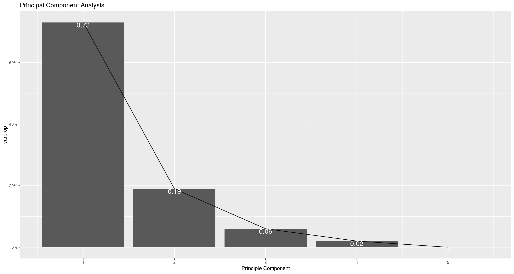
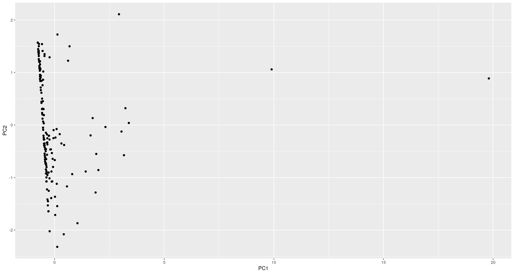

For this project, I chose a dataset of COVID-19 statistics and a dataset of obesity among adults by country. The variables contained in the COVID-19 dataset are province/state, country/region, longitude, latitude, number of confirmed cases, number of deaths, number recovered, number active, and WHO region. The obesity dataset contains country, year, obesity % among adults, sex, and the oservation number (X1). I expect COVID-19 variables to be correlated with one another, such as confirmed cases and deaths, but I do not have any expectations for the relationship between mean obesity and COVID-19 data. I chose these datasets because these are two prevalent health conditions/diseases in our world today, and I am interested to dive into the releationships between them.
coviduntidy <- covid %>% pivot_longer(cols = c(Lat,
Long), names_to = "name", values_to = "value")
coviduntidy %>% pivot_wider(names_from = "name", values_from = "value")## # A tibble: 49,068 x 10
## `Province/State` `Country/Region` Date Confirmed Deaths Recovered
## <chr> <chr> <date> <dbl> <dbl> <dbl>
## 1 <NA> Afghanistan 2020-01-22 0 0 0
## 2 <NA> Albania 2020-01-22 0 0 0
## 3 <NA> Algeria 2020-01-22 0 0 0
## 4 <NA> Andorra 2020-01-22 0 0 0
## 5 <NA> Angola 2020-01-22 0 0 0
## 6 <NA> Antigua and Bar… 2020-01-22 0 0 0
## 7 <NA> Argentina 2020-01-22 0 0 0
## 8 <NA> Armenia 2020-01-22 0 0 0
## 9 Australian Capi… Australia 2020-01-22 0 0 0
## 10 New South Wales Australia 2020-01-22 0 0 0
## # … with 49,058 more rows, and 4 more variables: Active <dbl>, `WHO
## # Region` <chr>, Lat <dbl>, Long <dbl>obesityuntidy <- obesity %>% pivot_longer(cols = c(Country,
Sex), names_to = "name", values_to = "value")
obesityuntidy %>% pivot_wider(names_from = "name",
values_from = "value")## # A tibble: 24,570 x 5
## X1 Year `Obesity (%)` Country Sex
## <dbl> <dbl> <chr> <chr> <chr>
## 1 0 1975 0.5 [0.2-1.1] Afghanistan Both sexes
## 2 1 1975 0.2 [0.0-0.6] Afghanistan Male
## 3 2 1975 0.8 [0.2-2.0] Afghanistan Female
## 4 3 1976 0.5 [0.2-1.1] Afghanistan Both sexes
## 5 4 1976 0.2 [0.0-0.7] Afghanistan Male
## 6 5 1976 0.8 [0.2-2.0] Afghanistan Female
## 7 6 1977 0.6 [0.2-1.2] Afghanistan Both sexes
## 8 7 1977 0.2 [0.0-0.7] Afghanistan Male
## 9 8 1977 0.9 [0.3-2.1] Afghanistan Female
## 10 9 1978 0.6 [0.2-1.3] Afghanistan Both sexes
## # … with 24,560 more rowsobesityfinal <- obesity %>% select(-Sex) %>% filter(Year ==
2016) %>% mutate(Country = recode(Country, `United States of America` = "US",
Taiwan = "Taiwan*", `Iran (Islamic Republic of)` = "Iran",
`Russian Federation` = "Russia", `United Kingdom of Great Britain and Northern Ireland` = "United Kingdom",
Congo = "Congo (Kinshasa)", `Venezuela (Bolivarian Republic of)` = "venezuela",
`Brunei Darussalam` = "Brunei", `Côte d'Ivoire` = "Cote d'Ivoire",
`Bolivia (Plurinational State of)` = "Bolivia"))
obesityfinal %>% glimpse()## Rows: 585
## Columns: 4
## $ X1 <dbl> 123, 124, 125, 249, 250, 251, 375, 376, 377, 501, 502, …
## $ Country <chr> "Afghanistan", "Afghanistan", "Afghanistan", "Albania",…
## $ Year <dbl> 2016, 2016, 2016, 2016, 2016, 2016, 2016, 2016, 2016, 2…
## $ `Obesity (%)` <chr> "5.5 [3.4-8.1]", "3.2 [1.3-6.4]", "7.6 [4.3-12.4]", "21…joined <- covid %>% left_join(obesityfinal, by = c(`Country/Region` = "Country"))
joined %>% glimpse()## Rows: 140,812
## Columns: 13
## $ `Province/State` <chr> NA, NA, NA, NA, NA, NA, NA, NA, NA, NA, NA, NA, NA, …
## $ `Country/Region` <chr> "Afghanistan", "Afghanistan", "Afghanistan", "Albani…
## $ Lat <dbl> 33.93911, 33.93911, 33.93911, 41.15330, 41.15330, 41…
## $ Long <dbl> 67.70995, 67.70995, 67.70995, 20.16830, 20.16830, 20…
## $ Date <date> 2020-01-22, 2020-01-22, 2020-01-22, 2020-01-22, 202…
## $ Confirmed <dbl> 0, 0, 0, 0, 0, 0, 0, 0, 0, 0, 0, 0, 0, 0, 0, 0, 0, 0…
## $ Deaths <dbl> 0, 0, 0, 0, 0, 0, 0, 0, 0, 0, 0, 0, 0, 0, 0, 0, 0, 0…
## $ Recovered <dbl> 0, 0, 0, 0, 0, 0, 0, 0, 0, 0, 0, 0, 0, 0, 0, 0, 0, 0…
## $ Active <dbl> 0, 0, 0, 0, 0, 0, 0, 0, 0, 0, 0, 0, 0, 0, 0, 0, 0, 0…
## $ `WHO Region` <chr> "Eastern Mediterranean", "Eastern Mediterranean", "E…
## $ X1 <dbl> 123, 124, 125, 249, 250, 251, 375, 376, 377, 501, 50…
## $ Year <dbl> 2016, 2016, 2016, 2016, 2016, 2016, 2016, 2016, 2016…
## $ `Obesity (%)` <chr> "5.5 [3.4-8.1]", "3.2 [1.3-6.4]", "7.6 [4.3-12.4]", …joined2 <- joined %>% filter((Confirmed + Deaths +
Recovered) != 0) %>% group_by(`Country/Region`,
Date) %>% mutate(Confirmed = sum(Confirmed), Deaths = sum(Deaths),
Recovered = sum(Recovered), Active = sum(Active)) %>%
select(-"Province/State", -"X1", -"Lat", -"Long")
joined2 %>% glimpse()## Rows: 112,133
## Columns: 9
## Groups: Country/Region, Date [27,138]
## $ `Country/Region` <chr> "China", "China", "China", "China", "China", "China"…
## $ Date <date> 2020-01-22, 2020-01-22, 2020-01-22, 2020-01-22, 202…
## $ Confirmed <dbl> 1644, 1644, 1644, 1644, 1644, 1644, 1644, 1644, 1644…
## $ Deaths <dbl> 51, 51, 51, 51, 51, 51, 51, 51, 51, 51, 51, 51, 51, …
## $ Recovered <dbl> 84, 84, 84, 84, 84, 84, 84, 84, 84, 84, 84, 84, 84, …
## $ Active <dbl> 1509, 1509, 1509, 1509, 1509, 1509, 1509, 1509, 1509…
## $ `WHO Region` <chr> "Western Pacific", "Western Pacific", "Western Pacif…
## $ Year <dbl> 2016, 2016, 2016, 2016, 2016, 2016, 2016, 2016, 2016…
## $ `Obesity (%)` <chr> "6.2 [4.7-7.9]", "5.9 [3.9-8.4]", "6.5 [4.5-9.1]", "…joined3 <- joined2 %>% separate("Obesity (%)", into = c("Obesity (%)",
"x"), sep = 3) %>% select(-"x") %>% group_by(`Country/Region`) %>%
mutate(`Mean Obesity (%)` = mean(as.numeric(`Obesity (%)`),
na.rm = T)) %>% select(-"Obesity (%)") %>%
arrange(desc(`Mean Obesity (%)`)) %>% na.omit() %>%
distinct()
joined3 %>% glimpse()## Rows: 24,138
## Columns: 9
## Groups: Country/Region [166]
## $ `Country/Region` <chr> "Kuwait", "Kuwait", "Kuwait", "Kuwait", "Kuwait", …
## $ Date <date> 2020-02-24, 2020-02-25, 2020-02-26, 2020-02-27, 2…
## $ Confirmed <dbl> 3, 33, 78, 129, 135, 135, 135, 168, 168, 168, 174,…
## $ Deaths <dbl> 0, 0, 0, 0, 0, 0, 0, 0, 0, 0, 0, 0, 0, 0, 0, 0, 0,…
## $ Recovered <dbl> 0, 0, 0, 0, 0, 0, 0, 0, 0, 0, 0, 0, 0, 3, 3, 3, 6,…
## $ Active <dbl> 3, 33, 78, 129, 135, 135, 135, 168, 168, 168, 174,…
## $ `WHO Region` <chr> "Eastern Mediterranean", "Eastern Mediterranean", …
## $ Year <dbl> 2016, 2016, 2016, 2016, 2016, 2016, 2016, 2016, 20…
## $ `Mean Obesity (%)` <dbl> 38.33333, 38.33333, 38.33333, 38.33333, 38.33333, …joined3 %>% group_by(Date) %>% summarize_if(is.numeric,
n_distinct)## # A tibble: 188 x 7
## Date Confirmed Deaths Recovered Active Year `Mean Obesity (%)`
## <date> <int> <int> <int> <int> <int> <int>
## 1 2020-01-22 3 2 2 3 1 4
## 2 2020-01-23 4 2 2 4 1 5
## 3 2020-01-24 4 2 2 4 1 6
## 4 2020-01-25 5 2 2 5 1 8
## 5 2020-01-26 6 2 4 6 1 10
## 6 2020-01-27 6 2 4 6 1 13
## 7 2020-01-28 7 2 4 8 1 13
## 8 2020-01-29 8 2 4 8 1 15
## 9 2020-01-30 10 2 5 9 1 17
## 10 2020-01-31 11 2 5 9 1 21
## # … with 178 more rowsjoined3 %>% summarize(mean(Confirmed), sd(Confirmed),
mean(Deaths), sd(Deaths), mean(Recovered), sd(Recovered),
mean(Active), sd(Active), mean(`Mean Obesity (%)`))## # A tibble: 166 x 10
## `Country/Region` `mean(Confirmed… `sd(Confirmed)` `mean(Deaths)` `sd(Deaths)`
## <chr> <dbl> <dbl> <dbl> <dbl>
## 1 Afghanistan 37479. 41610. 950. 1179.
## 2 Albania 4185. 3848. 121. 98.8
## 3 Algeria 22982. 22280. 1519. 1110.
## 4 Andorra 1914. 892. 110. 60.1
## 5 Angola 523. 716. 24.9 30.7
## 6 Antigua and Bar… 98.3 72.3 7.14 3.49
## 7 Argentina 90830. 129451. 1995. 2325.
## 8 Armenia 31957. 36877. 545. 674.
## 9 Australia 15656. 11805. 186. 146.
## 10 Austria 39643. 19393. 1391. 836.
## # … with 156 more rows, and 5 more variables: `mean(Recovered)` <dbl>,
## # `sd(Recovered)` <dbl>, `mean(Active)` <dbl>, `sd(Active)` <dbl>,
## # `mean(\`Mean Obesity (%)\`)` <dbl>joined3 %>% group_by(Date) %>% summarize(min(Confirmed),
median(Confirmed), max(Confirmed), min(Deaths),
median(Deaths), max(Deaths), min(Active), median(Active),
max(Active))## # A tibble: 188 x 10
## Date `min(Confirmed)` `median(Confirm… `max(Confirmed)` `min(Deaths)`
## <date> <dbl> <dbl> <dbl> <dbl>
## 1 2020-01-22 3 6 1644 0
## 2 2020-01-23 3 6 1929 0
## 3 2020-01-24 6 7.5 2760 0
## 4 2020-01-25 3 9 4218 0
## 5 2020-01-26 3 12 6225 0
## 6 2020-01-27 3 12 8631 0
## 7 2020-01-28 3 12 16527 0
## 8 2020-01-29 3 15 18261 0
## 9 2020-01-30 3 12 24423 0
## 10 2020-01-31 3 12 29406 0
## # … with 178 more rows, and 5 more variables: `median(Deaths)` <dbl>,
## # `max(Deaths)` <dbl>, `min(Active)` <dbl>, `median(Active)` <dbl>,
## # `max(Active)` <dbl>joined3 %>% group_by(`Country/Region`, `WHO Region`) %>%
summarize(var(Confirmed), var(Active), var(Deaths),
var(Recovered))## # A tibble: 166 x 6
## # Groups: Country/Region [166]
## `Country/Region` `WHO Region` `var(Confirmed)` `var(Active)` `var(Deaths)`
## <chr> <chr> <dbl> <dbl> <dbl>
## 1 Afghanistan Eastern Med… 1731431484. 466211368. 1388926.
## 2 Albania Europe 14807757. 2572114. 9764.
## 3 Algeria Africa 496376251. 30354164. 1231058.
## 4 Andorra Europe 795350. 243756. 3615.
## 5 Angola Africa 513279. 242490. 942.
## 6 Antigua and Bar… Americas 5230. 1324. 12.2
## 7 Argentina Americas 16757572766. 5336663747. 5404467.
## 8 Armenia Europe 1359904706. 193801501. 453844.
## 9 Australia Western Pac… 139358364. 22166876. 21393.
## 10 Austria Europe 376102220. 59107968. 698352.
## # … with 156 more rows, and 1 more variable: `var(Recovered)` <dbl>cor_joined3 <- joined3 %>% ungroup() %>% select(-`Country/Region`,
-Date, -Year, -`WHO Region`) %>% cor()
cor_joined3 %>% glimpse()## num [1:5, 1:5] 1 0.911 0.893 0.95 0.142 ...
## - attr(*, "dimnames")=List of 2
## ..$ : chr [1:5] "Confirmed" "Deaths" "Recovered" "Active" ...
## ..$ : chr [1:5] "Confirmed" "Deaths" "Recovered" "Active" ...joined3 %>% group_by(`Country/Region`, `Mean Obesity (%)`,
`WHO Region`) %>% summarize(max_confirmed = max(Confirmed)) %>%
ggplot(aes(x = `Mean Obesity (%)`, y = max_confirmed,
color = `WHO Region`)) + geom_point(size = 1.5) +
theme(legend.position = "right") + ylab("Maximum Confirmed COVID Cases (log scaled)") +
xlab("Mean Obesity of Adults (%)") + scale_y_log10() +
scale_x_continuous(breaks = seq(4, 40, 5)) + theme_light() +
ggtitle("Mean Obesity and Max COVID-19 Cases by WHO Region")
joined %>% group_by(`Country/Region`) %>% filter(Deaths >
2700) %>% separate(Date, into = c("Year", "Month",
"Day"), sep = "-") %>% separate(Month, into = c("x",
"month"), sep = 1) %>% select(-x) %>% ggplot(aes(`Country/Region`,
Deaths, fill = `WHO Region`)) + geom_bar(stat = "summary",
fun = mean) + theme(axis.text.x = element_text(angle = 45,
hjust = 1), legend.position = "right") + ggtitle("COVID-19 Deaths by Country per Month") +
scale_y_log10() + geom_errorbar(stat = "summary",
fun.data = mean_se) + facet_wrap(~month)
joined_clustering <- joined3 %>% group_by(`Country/Region`) %>%
summarize(meanconfirmed = mean(Confirmed), meandeaths = mean(Deaths),
meanrecovered = mean(Recovered), meanactive = mean(Active),
meanobesity = mean(`Mean Obesity (%)`))
joined_clustering %>% head()## # A tibble: 6 x 6
## `Country/Region` meanconfirmed meandeaths meanrecovered meanactive meanobesity
## <chr> <dbl> <dbl> <dbl> <dbl> <dbl>
## 1 Afghanistan 37479. 950. 15450. 21078. 5.43
## 2 Albania 4185. 121. 2529. 1534. 21
## 3 Algeria 22982. 1519. 14725. 6738. 26.7
## 4 Andorra 1914. 110. 1400. 404. 25
## 5 Angola 523. 24.9 152. 346. 8.07
## 6 Antigua and Bar… 98.3 7.14 56.9 34.2 18a <- joined_clustering %>% ungroup() %>% mutate_if(is.character,
as.factor) %>% select_if(is.numeric) %>% scale
rownames(a) <- joined_clustering$"Country/Region"
pca <- princomp(a)
names(pca)## [1] "sdev" "loadings" "center" "scale" "n.obs" "scores" "call"summary(pca, loadings = T)## Importance of components:
## Comp.1 Comp.2 Comp.3 Comp.4 Comp.5
## Standard deviation 1.905577 0.9675645 0.54063628 0.33194634 1.645452e-08
## Proportion of Variance 0.730646 0.1883710 0.05881181 0.02217124 5.447843e-17
## Cumulative Proportion 0.730646 0.9190170 0.97782876 1.00000000 1.000000e+00
##
## Loadings:
## Comp.1 Comp.2 Comp.3 Comp.4 Comp.5
## meanconfirmed 0.519 0.279 0.804
## meandeaths 0.496 -0.288 -0.816
## meanrecovered 0.467 0.824 -0.314
## meanactive 0.495 -0.488 0.506 -0.504
## meanobesity 0.147 -0.989eigval <- pca$sdev^2
varprop = round(eigval/sum(eigval), 2)
ggplot() + geom_bar(aes(y = varprop, x = 1:5), stat = "identity") +
xlab("Principle Component") + geom_path(aes(y = varprop,
x = 1:5)) + geom_text(aes(x = 1:5, y = varprop,
label = round(varprop, 2)), vjust = 1, col = "white",
size = 5) + scale_y_continuous(breaks = seq(0,
0.6, 0.2), labels = scales::percent) + scale_x_continuous(breaks = 1:10) +
ggtitle("Principal Component Analysis")
dataframe <- data.frame(PC1 = pca$scores[, 1], PC2 = pca$scores[,
2]) %>% rownames_to_column("Country/Region")
dataframe %>% ggplot(aes(PC1, PC2)) + geom_point()